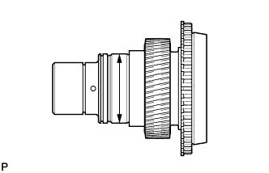
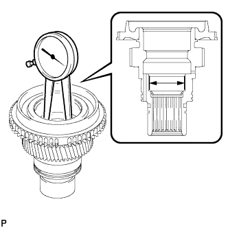
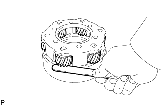
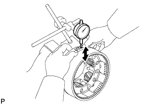
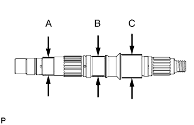
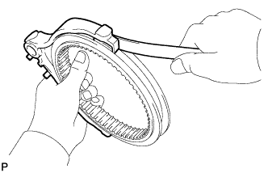
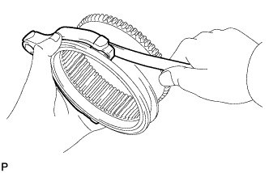
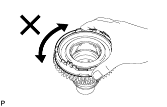
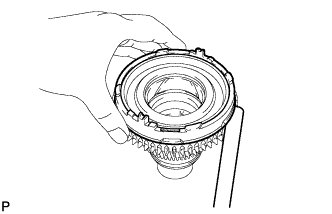

TRANSFER ASSEMBLY > INSPECTION |
| 1. INSPECT TRANSFER INPUT SHAFT |
 |
Using a micrometer, measure the diameter of the input shaft journal surface.
 |
Using a dial indicator, measure the inside diameter of the input shaft bush.
| 2. INSPECT TRANSFER LOW PLANETARY GEAR ASSEMBLY |
 |
Using a feeler gauge, measure the thrust clearance of the pinion gear.
 |
Using a dial indicator, measure the radial clearance of the pinion gear.
| 3. INSPECT REAR TRANSFER OUTPUT SHAFT |
 |
Using a micrometer, measure the diameter of the output shaft journals.
| Journal | Specified Condition |
| A | 38 mm (1.50 in.) |
| B | 42 mm (1.65 in.) |
| C | 49 mm (1.93 in.) |
| 4. INSPECT NO. 1 TRANSFER GEAR SHIFT FORK AND FRONT DRIVE CLUTCH SLEEVE |
 |
Using a feeler gauge, measure the clearance between the clutch sleeve and gear shift fork.
| 5. INSPECT NO. 2 TRANSFER GEAR SHIFT FORK AND HIGH AND LOW CLUTCH SLEEVE |
 |
Using a feeler gauge, measure the clearance between the clutch sleeve and gear shift fork.
| 6. INSPECT NO. 1 SYNCHRONIZER RING |
 |
Apply gear oil to the cone of the input shaft, and check that it does not turn in both directions while pushing the No. 1 synchronizer ring.
If it can turn, replace the No. 1 synchronizer ring.
 |
Push the No. 1 synchronizer ring to the cone of the input shaft. Measure the clearance between the No. 1 synchronizer ring and input shaft.